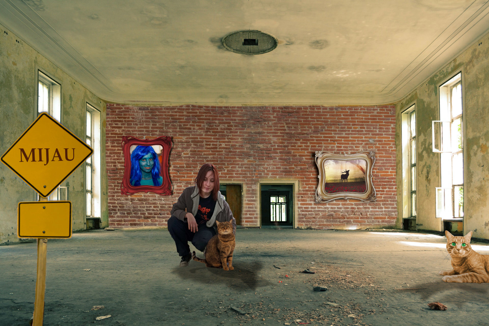

Vježba 1 – Fontovi
U ovoj vježbi koristili smo FontForge za izradu vlastitog fonta.
Vježba 2
Stvaranje krivulja i učenje različitih efekata u inkscapeu.

Vježba 3
Učenje copy-paste i transformiranja elemenata u inkscapeu.

Vježba 4
Učenje transparencije i primjena efekata u inkscapeu.

Projektni zadatak 1
Sveukupno iskorištavanje naučenih sposobnosti u inkscapeu.

Vježba 5
Učenje "čišćenja" lica na slikama.

Vježba 6
Učenje retuširanja i koloriranja u GIMP-u.

Vježba 7
Ubacivanje stranih elemenata u sliku.

Projektni zadatak 2
Korištenje stečenih znanja za manipulaciju slike u GIMP-u.
Vježba 8
Izrada nepomičnih GIF-ova.

Vježba 9
uređivanje Videouradaka.
Vježba 10 i 11
Izrada Index.html stranice i učenje osnovnog koda .